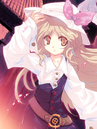
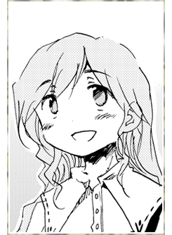
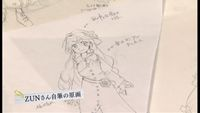

- Welcome to Touhou Wiki!
- Please register to edit. For assistance, check in with our Discord server or IRC channel.
Watatsuki no Toyohime
Watatsuki no Toyohime watat͡sɯ̥kʲi no tojoçʲime (♫) | |
|---|---|
|
 Watatsuki no Toyohime in Cage in Lunatic Runagate The Moon Princess Connecting Sea and MountainMore Character Titles | |
| Species | |
| Abilities |
Good fortune; can manipulate the boundaries between the Earth and Moon, and between the scientific and fantastic versions of the Moon; can link the sea and mountains. Carries a fan capable of inflicting mass destruction. |
| Age |
at least 1500 |
| Occupation |
Leader of the Lunar Defense Corps |
| Location |
Moon capital |
Music Themes | |
| |
Appearances | |
| Print Works | |
| |
Watatsuki no Toyohime (綿月 豊姫) is a Lunarian princess who along with her sister Watatsuki no Yorihime is in charge of the Lunarian Defense Corps.
General Information[edit]
Toyohime is Yorihime's older sister and one of the Lunarian princesses. She used to be Eirin Yagokoro's pupil. Though she has a gentle personality, she possesses immense power. She also likes the peaches that grow on the Moon, but doesn't get much exercise. Her responsibilities are to manage the rabbits that they use as emissaries, but it isn't very time-intensive, so she often joins Yorihime while she trains the moon rabbits.
Abilities[edit]
- Good fortune
According to Eirin, Toyohime's good luck is so great that she never had to face any trouble in her life.[1]
- Manipulating the boundary between the scientific and fantastic versions of the Moon
This allows Toyohime to maintain the barrier that protects the Moon. She also killed one of Yukari's crow shikigami by sending it in the airless scientific side.
- Linking "the sea and the mountains"
While the description of this ability seems rather specific, it supposedly allows Toyohime to go "anywhere she likes".[2] With the Moon being the "sea" and Gensokyo the "mountain", she was able to send a letter to Eirin, throw a stone on the Earth, and to instantly move herself and Reisen into Gensokyo. This makes Toyohime, along with Yukari, one of the few characters able to travel freely between the Earth and the Moon (although Yukari requires lunar phases).
Possessions[edit]
Toyohime carries a fan that is capable of great destruction. When talking to Yukari in the Bamboo Forest of the Lost, she claims that it can cause a wind that would instantly purify the entire forest to atomic level, and that it is supposed to be among the most advanced lunarian weapons.[3]
Backstory[edit]
Long ago, Toyohime's master, Eirin Yagokoro, explained to Toyohime why spiriting away happened. Everything is decided on probability, and thus possible events will always happen. This is even how the Lunarians came to the Moon in the first place. Toyohime instantly understood her master's lesson, and from then on, was one of the few people who could connect the Moon and the Earth.
Due to being a student of her master's, she and her sister Watatsuki no Yorihime were the primary candidates for taking over as leaders of the Lunar Emisaries after Eirin had abandoned the moon over one thousand years ago. Since then, they've been watching over the Earth to keep the Lunar Capital safe. While it was officially their job to find Eirin and bring her back, they eventually gave up on the matter, and never held any ill will towards their teacher.
However, eventually the Lunar Capital had gone under high alert due to several unsettling events. The first Lunar War where humans landed on the moon a few decades ago concluded without major incident (although it did cause their pet, Reisen Udongein Inaba, to flee to the Earth). Recently, however, several events such as the mysterious disappearance of the American flag from the Near Side of the Moon, reports that someone was calling upon the gods without the proper rites, and the Earth's latest plans to go to the Moon via a project named after an actual prisoner on the Moon has caused all sorts of rumours that there was a traitor in the Lunar Capital. Due to their lack of effort in tracking down Eirin as well as their connections to her, and Yorihime's ability to call upon the gods, the Watatsuki sisters became the primary suspects.
Character Design[edit]
Name[edit]
The chosen names for the Watatsuki Sisters make a direct reference to the family history of the Dragon God, who can be referred to alternatively as Ryujin or 'Watatsumi'. Individually, the sisters may refer to the Dragon God's daughters, Toyotama-hime[1] and her younger sister Tamayori-hime. Considering the events that were revealed in Chapter 3 of Cage in Lunatic Runagate, and that the Dragon Palace and the Lunar Capital are confirmed to be the the same place,[4] it can be rumored that many of the legends about the Dragon Palace in fact took place on the Moon.
Design[edit]
Long, flowing, sandy blonde hair and golden eyes. Wears a dark blue dress with a strap on the left over a white long-sleeved blouse, a loose belt with a gold mirror-shaped buckle, and a white bonnet with a red ribbon on it when she goes outdoors. Apparently, ZUN gave vague descriptions about weapons to Aki★Eda, so her drawing Toyohime with a fan as signature item is pretty much improvisation. [5]
Story[edit]
- Silent Sinner in Blue
- Main article: Silent Sinner in Blue
After being warned by Eirin Yagokoro of the invasion, she apprehends Yukari Yakumo and Ran Yakumo in Yukari's second attempt to invade the moon.
- Inaba of the Moon and Inaba of the Earth
- Main article: Inaba of the Moon and Inaba of the Earth
In chapter 25 of Inaba of the Moon and Inaba of the Earth, Toyohime and Yorihime visit Eirin Yagokoro at Eientei; when they return to the moon, she tries to take one of the Earth rabbits home with her.
Gallery[edit]
Watatsuki no Toyohime on the Vol. 2 cover of Silent Sinner in Blue
Watatsuki no Toyohime in Silent Sinner in Blue
Toyohime in Silent Sinner in Blue
Watatsuki no Toyohime in Inaba of the Moon & Inaba of the Earth
Watatsuki no Toyohime in Cage in Lunatic Runagate
Toyohime in Symposium of Post-mysticism, with other characters who don't appear in the book.
Toyohime character sketch by ZUN, from Strange Creators of Outer World 3.
Relationships[edit]
She and Yorihime appear to hold their relationships in high regard.
Distantly related to Eirin through marriage to their unnamed husbands (one of the Watatsuki sisters was the wife of Eirin's grandnephew, while the other one was married to their son[1]), Eirin was also their teacher, whom they treat with much respect and admiration, despite Eirin being a fugitive. Of note is that Toyohime and Yorihime never refer to Eirin Yagokoro as "Eirin", but only as "Lady Yagokoro", as "Eirin" is not her true Lunarian name.
She was her former pet. They seem to miss their former pet dearly. Reisen is only "Reisen" to the Watatsuki sisters, without her nicknames of Udongein Inaba that Eirin and Kaguya later gave her.
- Reisen
Reisen is now her current pet. They treat her just as well.
They're the Gatekeepers of the Moon Capital.
Additional Information[edit]
- It's implied she and her sister were the ones primarily responsible for thwarting Yukari's invasion of the Moon long ago, as Yukari specifically points out it's "the Watsukis" whom she's delighting on taking revenge on in Silent Sinner in Blue chapter 21, while also saying in Cage in Lunatic Runagate's last chapter that she purposefully executed her revenge in a way that other Lunarians weren't affected by it, but this is not confirmed. Toyohime doesn't react when Ran Yakumo calls Yukari "Lady Yukari" by name in front of her in Chapter 19 despite revealing in Cage in Lunatic Runagate that Yukari's very notorious for her invasion of the Moon one-thousand years ago, possibly indicating personal familiarity.
- She and her sister are two of four characters so far known to be/to have been married. The others are Seiga Kaku and Junko.
Fandom[edit]
Official Profiles[edit]
|  | 綿月 豊姫 （わたつき の とよひめ） 月人／能力：？？？ 永琳がかつて面倒を見た月の姫。依姫の姉にあたる。能 |
Watatsuki no Toyohime (Watatsuki no Toyohime) Lunarian/Ability:???
A moon princess who Eirin once looked after. Her ability is as yet unknown, but she seems to have a simple, innocent personality. She seems to have really loved her old pet rabbit "Reisen" ... |
|  | *家の中では帽子はかけない。
|
*She doesn't wear a hat indoors.
|
Official Sources[edit]
- 2007/12/08 ~ 2009/04/09 Silent Sinner in Blue - Chapters 7~21
- 2007/12/25 Cage in Lunatic Runagate - Chapter 3
- 2009/06/22 ~ 2009/11/22 Inaba of the Moon and Inaba of the Earth - Chapters 25~30
References[edit]
- ↑ 1.0 1.1 Cage in Lunatic Runagate/First Chapter
- ↑ Symposium of Post-mysticism/Interview: Toyohime has "the ability to connect mountains and seas", which is an ability to move anywhere she likes. Most importantly, she can move between the Lunar Capital and Earth, with Gensokyo being the "mountain" and the moon being the "sea".
- ↑ Silent Sinner in Blue -Chapter 18]]
- ↑ Symposium of Post-mysticism/Interview
- ↑ Symposium_of_Post-mysticism/Interview: I didn't explain the weapons to Aki★Eda so the depiction was super vague (laugh). Her sister Yorihime is a more ordinary character.
| This page is part of Project Characters, a Touhou Wiki project that aims to write proper descriptions for all official characters of Touhou Project. Please keep the character page guidelines in mind when contributing. |